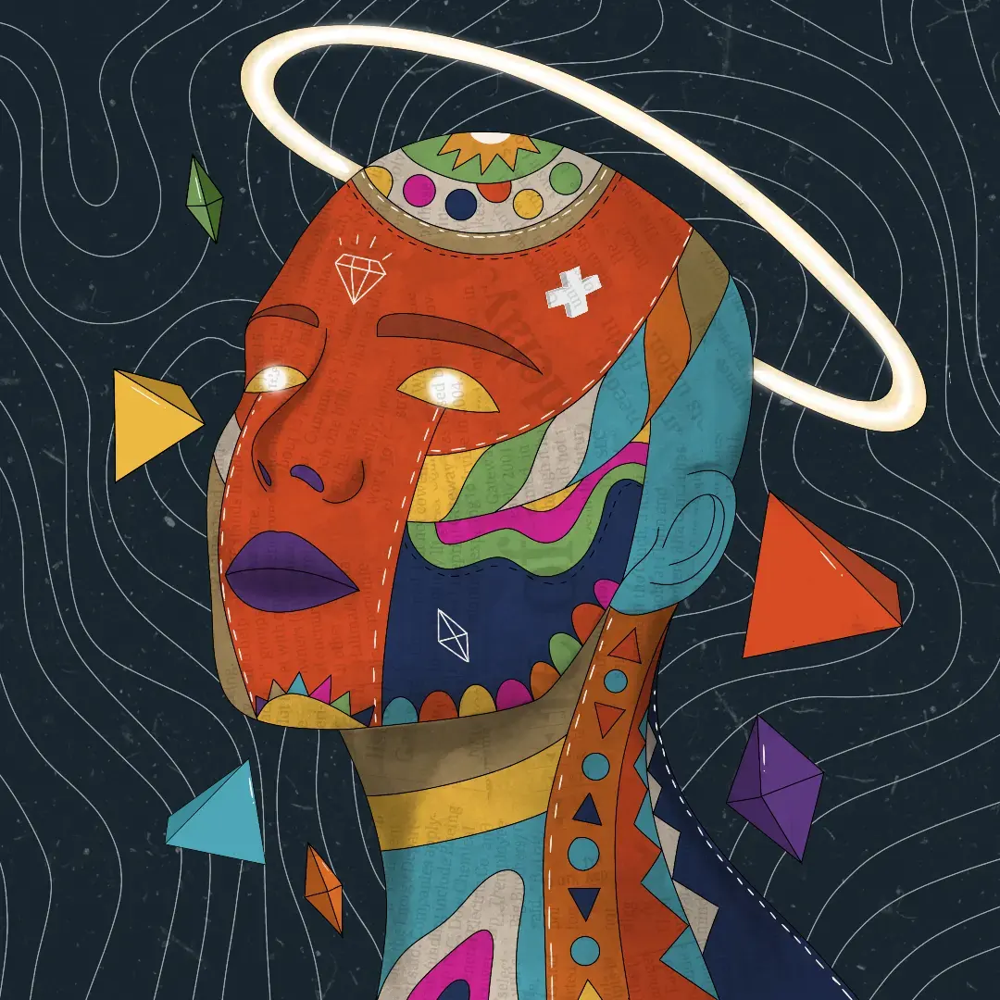
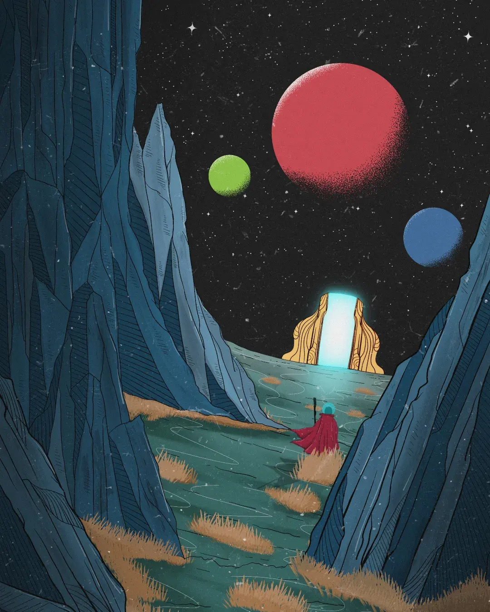
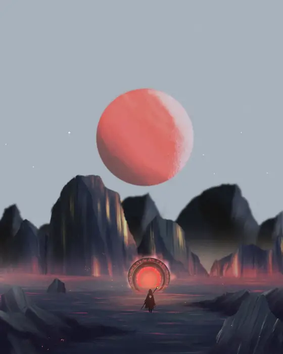
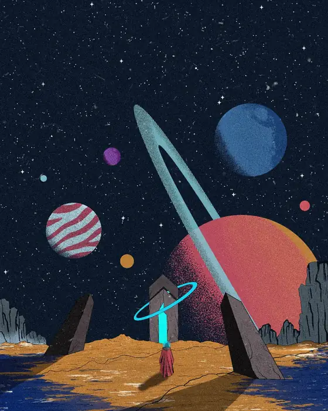
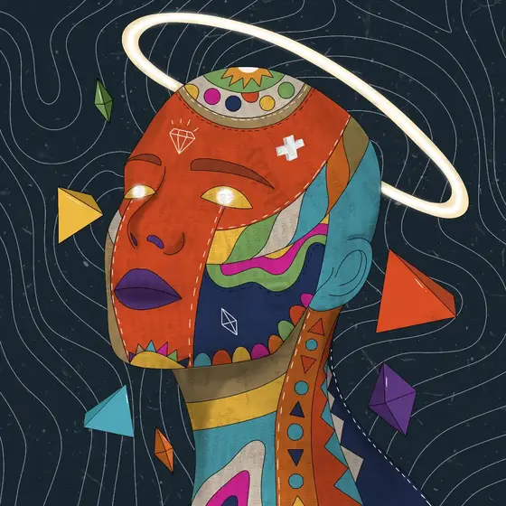
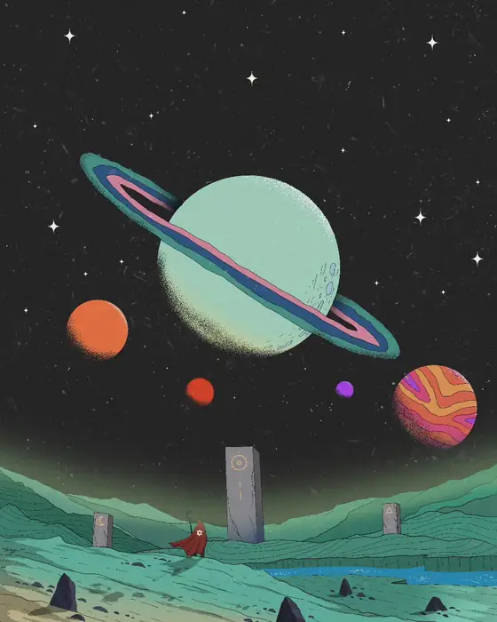
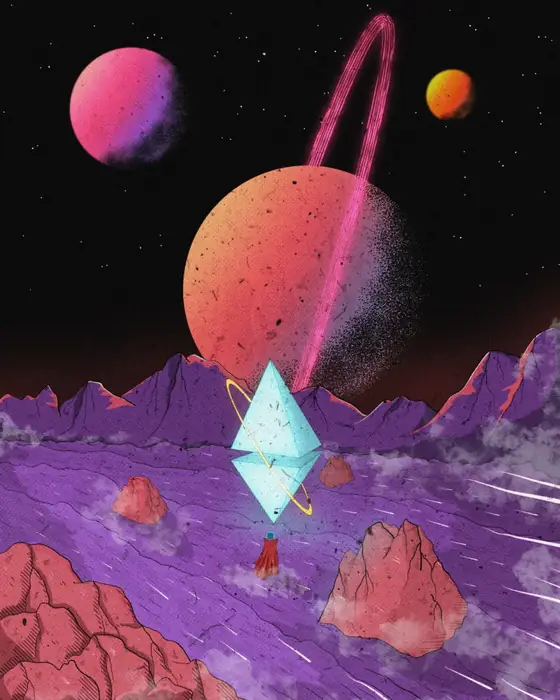

Worlds remembered from the other side of sleep.
I Statement
Every piece begins as a fragment: a face, a planet, a doorway. It grows, slowly, into a small mythology of its own.


I make doors to places that do not exist yet.
For over five years I have drawn figures, planets and thresholds out of the same quiet place, somewhere between memory and dream. Faces become terrain. Silence becomes a landscape. A single figure in red crosses worlds that have long outlived their makers.
I make work for collectors who want to feel, even briefly, that they have stepped through.
II Series
Geometria
Faces as terrain. Identity assembled from pattern, colour and fracture, portraits of the mind, seen from the inside.
Keep scrolling
III Series
Cosmos
A lone figure in red, crossing worlds that have outlived their makers. Distance, scale, and the stillness before a threshold.
Keep scrolling
IV Recurring Motifs
The same dream,
returning in different rooms.
-
01
The Threshold
Doorways, portals, gates: the moment just before stepping through.

-
02
The Witness
A solitary figure in red, small against vast and indifferent worlds.

-
03
The Mask
Faces worn as pattern. Portraits that behave like landscapes.

-
04
The Void
Empty space that somehow still feels like it is speaking.

-
05
The Monument
What remains standing long after the builders are gone.

V Enquiries
If a work has
stayed with you,
say so.
Open to commissions, collaborations and private collectors. Every message is read.